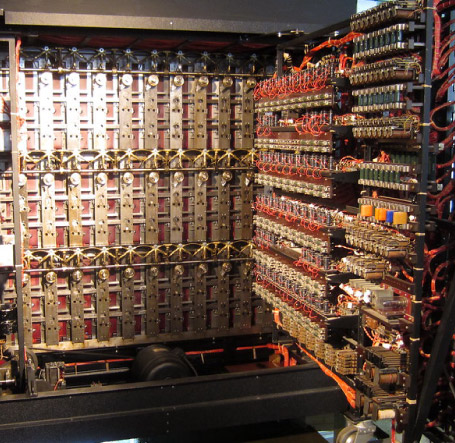

¿Qué sucesos se desencadenaron a partir de sus investigaciones?: Un Vistazo al Futuro
Las investigaciones de Alan Turing produjeron consecuencias significativas tanto en el ámbito científico como en el tecnológico y militar.
Su importancia no reside únicamente en los dispositivos o métodos desarrollados durante su vida, sino también en los conceptos teóricos
que posteriormente se convirtieron en fundamentos de disciplinas enteras.

Las investigaciones de Alan Turing produjeron consecuencias significativas tanto en el ámbito científico como en el tecnológico y militar. Su importancia no reside únicamente en los dispositivos o métodos desarrollados durante su vida, sino también en los conceptos teóricos que posteriormente se convirtieron en fundamentos de disciplinas enteras.
Aportes a la teoría de la computación y al desarrollo tecnológico.
Uno de los principales efectos del trabajo de Alan Turing fue la consolidación de la teoría de la computación. La Máquina de Turing proporcionó un modelo formal para estudiar los procesos computacionales y permitió analizar de manera rigurosa qué problemas podían ser resueltos mediante algoritmos. Este modelo se convirtió en una referencia fundamental de la informática teórica y continúa siendo utilizado para estudiar la computabilidad y la complejidad de los problemas.
Su trabajo durante la Segunda Guerra Mundial tuvo además consecuencias en el ámbito del criptoanálisis y la inteligencia militar. El desarrollo de métodos y máquinas para analizar las comunicaciones cifradas alemanas permitió procesar información que, de otro modo, habría sido considerablemente más difícil de obtener. El descifrado de las comunicaciones de Enigma contribuyó a las operaciones de inteligencia de los Aliados y tuvo especial relevancia en el seguimiento de las comunicaciones relacionadas con la guerra naval.
En el período posterior a la guerra, sus investigaciones contribuyeron al desarrollo conceptual de las computadoras de propósito general. Turing participó en distintos proyectos vinculados con las primeras computadoras electrónicas y trabajó sobre cuestiones relacionadas con su arquitectura, programación y utilización científica.
Influencia en la inteligencia artificial y en la informática moderna.
Otro de los efectos de sus investigaciones fue la apertura de un nuevo campo de discusión en torno a la inteligencia artificial. Su artículo de 1950 planteó de manera explícita la cuestión de si las máquinas podían presentar comportamientos que pudieran ser considerados inteligentes. El Test de Turing se convirtió posteriormente en uno de los conceptos históricos más reconocidos dentro de este campo y continúa siendo objeto de análisis y debate.
En una perspectiva histórica, puede afirmarse que el trabajo de Turing contribuyó a establecer un vínculo entre la lógica matemática, los algoritmos, las máquinas de cálculo y la inteligencia artificial. Esta convergencia fue fundamental para la evolución de la informática durante la segunda mitad del siglo XX y constituye uno de los antecedentes intelectuales de numerosas tecnologías computacionales contemporáneas.